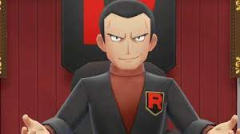

"Pokemon FireRed" é um jogo que se tornou um clássico instantâneo desde seu lançamento, proporcionando aos jogadores uma jornada inesquecível pelo mundo de Kanto. Neste título, os treinadores embarcam em uma missão para se tornarem os melhores mestres de Pokemon, explorando cidades vibrantes, enfrentando ginásios desafiadores e lutando contra a infame Equipe Rocket. A jornada começa na tranquila cidade de Pallet, onde o Professor Carvalho oferece aos jogadores a escolha entre três Pokémon iniciais: Bulbasaur, Charmander e Squirtle. Cada um possui habilidades únicas e evolui para formas mais poderosas à medida que avançam na aventura. À medida que os treinadores viajam por Kanto, encontram uma variedade de habitats, desde florestas exuberantes até cavernas sinistras e oceanos vastos. Cada área oferece uma oportunidade de capturar novos Pokémon, expandindo a equipe e fortalecendo-a para os desafios futuros.
Os ginásios são testes cruciais de habilidade e estratégia. Liderados por líderes de ginásio especializados em tipos específicos de Pokémon, esses desafios exigem que os jogadores usem suas habilidades de batalha para superar obstáculos e conquistar insígnias. Com cada vitória, os treinadores se aproximam de seu objetivo final de desafiar a Elite Four e o Campeão da Liga Pokémon.
Enquanto isso, a Equipe Rocket, uma organização criminosa infame, está causando estragos em Kanto, roubando Pokémon e causando problemas por toda parte. Cabe aos jogadores frustrar seus planos malignos, enfrentando seus membros em batalhas e desmantelando suas operações.

Além da história principal, "Pokemon FireRed" oferece uma variedade de atividades secundárias, como concursos de beleza de Pokémon, competições de batalha e até mesmo a oportunidade de capturar o lendário Pokémon Mewtwo em uma caverna secreta. Com gráficos coloridos, mecânicas de jogo envolventes e uma trilha sonora cativante, "Pokemon FireRed" continua a cativar jogadores de todas as idades, proporcionando uma experiência atemporal no mundo emocionante de Pokémon.